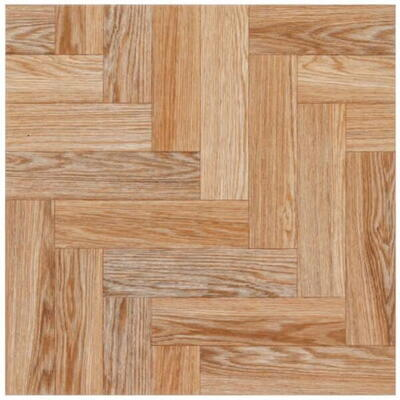

Piso interno brilhante borda arredondada marrom 58x58cm
Preço: R$22,90/m²
Descrição detalhada
| Produto | Piso cerâmico |
|---|---|
| Ambiente indicado | Áreas internas |
| Cor | Marrom |
| Intensidade do brilho | Brilhante |
| Local indicado para colocação | Chão |
| Uso recomendado | Banheiros, cozinhas, quartos e salas |
| Antiderrapante | Não |
| Tipo de textura | Liso |
| Largura | 58,00 cm |
| Comprimento | 58,00 cm |
| Espessura | 7,90 mm |
| Resistência a mancha | Média |
| Resistência ao risco | Baixa |
| Espaçamento entre as peças | 5 mm |